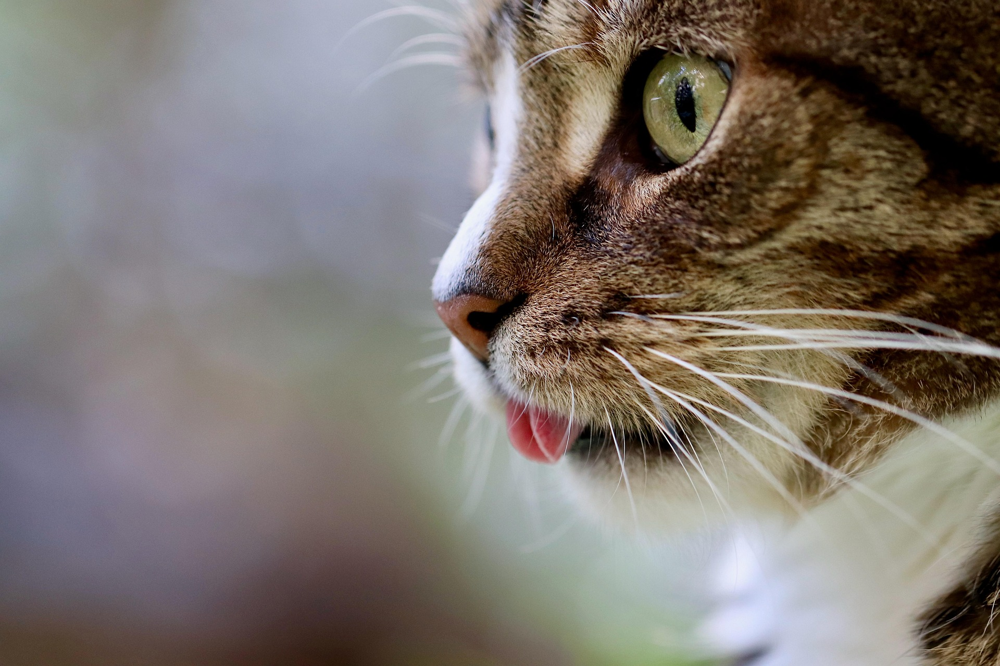
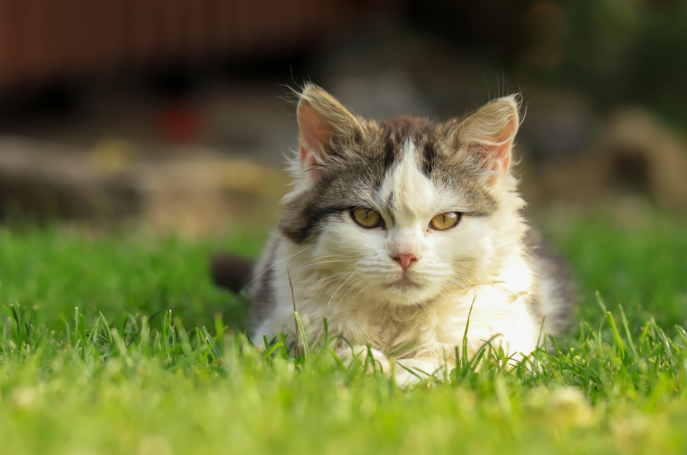
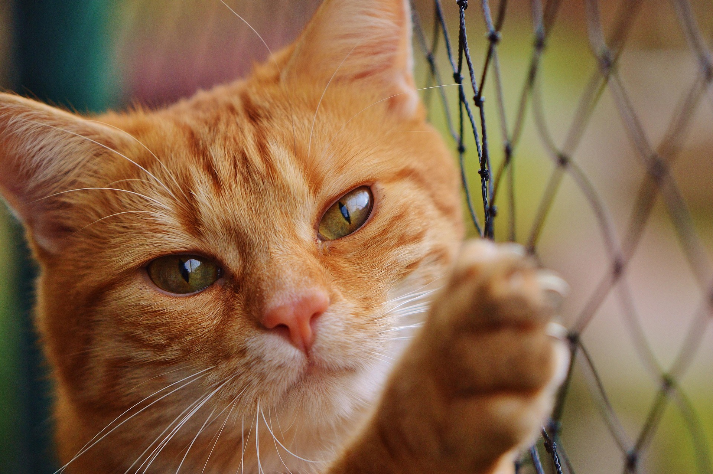

Some random information.

“In ancient times cats were worshipped as gods; they have not forgotten this.”

“I had been told that the training procedure with cats was difficult. It’s not. Mine had me trained in two days.”

“As anyone who has ever been around a cat for any length of time well knows, cats have enormous patience with the limitations of the humankind.”

“I have studied many philosophers and many cats. The wisdom of cats is infinitely superior.”